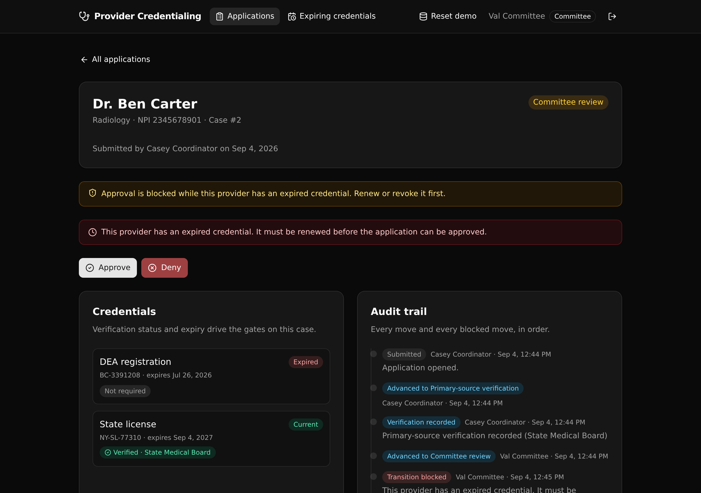

A governed Xano backend where a healthcare credentialing case moves through an enforced lifecycle, and illegal moves, unverified approvals, and expired credentials are all blocked at the API layer.

A credentialing case is the kind of workflow a health system holds in a legacy app today: a state machine, role checks, verification gates, and expiry rules, tangled into a client nobody wants to touch. Here those rules are the endpoints, in one API layer an evaluator can read and trust.
Submitted, verification, committee review, approved or denied, then re-credential. Any other move is rejected and logged.
A case cannot enter committee review until every active credential has a verified primary-source record.
A credential within 30 days is flagged, and an already-expired one blocks the case from being approved.
Coordinator, committee, and viewer are checked with s.precondition in each endpoint. Not row-level security.
Each move and each blocked move writes one row, so the case history reads as a governed record.
The React frontend derives every path and type from the query defs. Change a def and it fails to compile until it matches.
Two groups: api:auth and api:credentialing.
| Method | Path | What it enforces |
|---|---|---|
| POST | /api:auth/login | Verifies the password, mints a bearer token. |
| GET | /api:auth/me | The current caller and their role. |
| POST | /api:credentialing/seed | Idempotent demo data. Public, so the demo can be reset. |
| GET | /api:credentialing/applications | Every case with its provider. Any signed-in role. |
| GET | /api:credentialing/applications/{id} | One case with credentials, verifications, and the audit trail. |
| POST | /api:credentialing/applications/submit | Coordinator opens a case. |
| POST | /api:credentialing/applications/{id}/verify | Coordinator records a primary-source verification. |
| POST | /api:credentialing/applications/{id}/advance | The governed core: state machine, gate, expiry, role guard. Logs the move or the block. |
| GET | /api:credentialing/credentials/expiring | Credentials expiring within 30 days or already past. |
One click per seeded role (coordinator, committee, viewer) to see the role-gated actions change.
Every case with its provider, specialty, and current status.
Credentials with expiry flags, verification status, the role-gated actions, and the growing audit trail. A blocked move shows its reason inline.
The governance view: what is expiring soon or already past, and driving the approval block.
Point an AI coding agent at this repository and ask it to start from the template, then adapt the tables and endpoints to your domain:
Start from the XanoTS template at https://github.com/xano-scratch/provider-credentialing-workflow Clone it, run npm install, then `npx xanots login` and `npm run xano:deploy` to get a live backend and frontend. Then adapt the tables and the governed endpoints in xano/ to my use case, keeping the state machine, the API-layer role checks, and the audit trail.
Or run it yourself:
git clone https://github.com/xano-scratch/provider-credentialing-workflow.git cd provider-credentialing-workflow npm install npx xanots login npm run xano:deploy
The live preview links shared elsewhere point at an ephemeral Xano
environment that expires. Re-deploy with npm run xano:deploy
for fresh links. The durable artifact is this repository, which anyone
can clone and deploy.